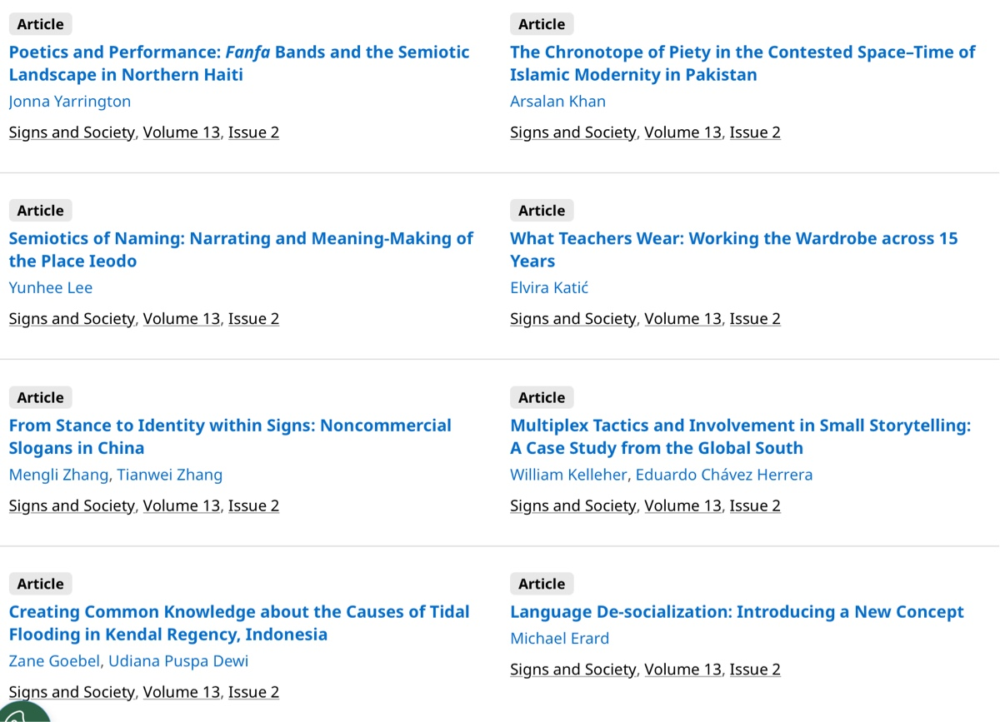

Chronotopes & Text-Worlds
To my mind, there are clear echoes of Mikhail Bakhtin’s chronotopes in text world theory (see Ernestine Lahey’s terrific encapsulation linked below), and so it was good to see that in the most recent issue of Signs and Society there was an article using chronotopes:
